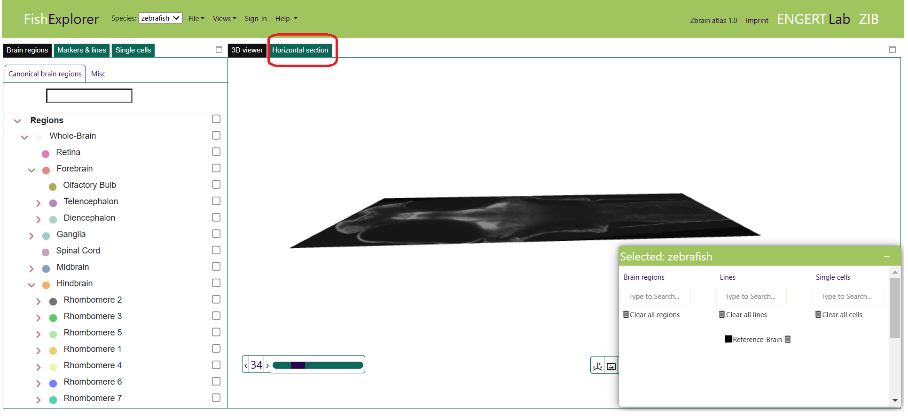
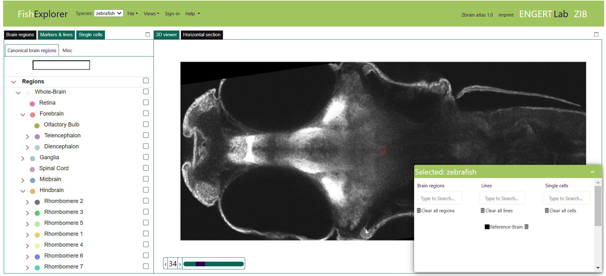
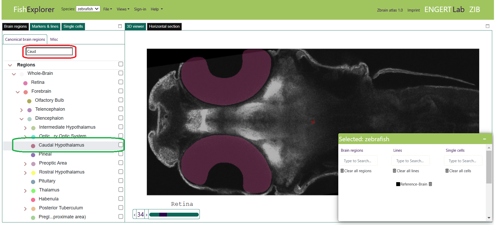
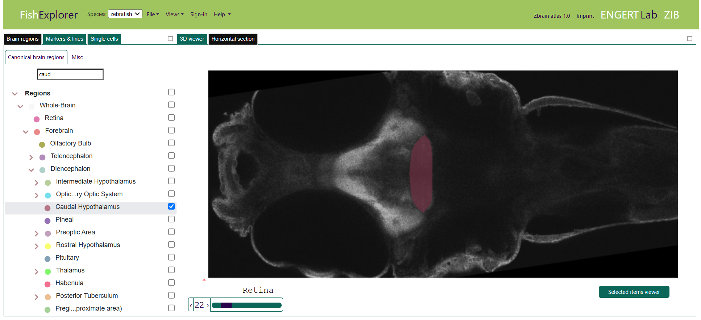

Visualization of 2D regions
- This section provides a step-by-step introduction to the visualization of anatomical regions, e.g., Caudal hypothalamus, in the horizontal-section viewer. FishExplorer superimposes anatomical regions as solid contours. In this section we consider the simplest case, namely the display of the reference zebrafish brain stored on the server. To load it, please follow the steps described below:
- When the FishExplorer is started, a 3D viewer appears as the default window, as shown below.
The corresponding 3D viewer tab is selected, see the highlighted rectangle

- Click on the adjacent “horizontal section” tab (highlighted in red in the image above) at the top left.
This will bring up a 2D viewer like the one shown in the image below.

-
Now, imagine that you want to display, for example, the Caudal hypothalamus.
To do this, search for the anatomical region by typing the first few letters in the white search box (encircled by a red line) in the brain regions viewer on the left.
Alternatively, you can scroll through the list of regions.
The list of regions matching your search criteria will appear on the screen as shown below.

- Next, select the checkbox after the region name, e.g. Caudal hypothalamus (encircled with
a green line). If the current slice contains the selected region, Caudal hypothalamus, the outlined region will be displayed in the horizontal section viewer.
The slice depicted is slice 34, as you can see at the bottom of the 2D-viewer.
However, this slice does not contain the Caudal hypothalamus. Therefore, go to slice 22,
using the slider.
